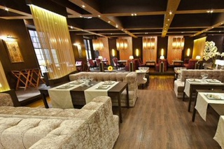
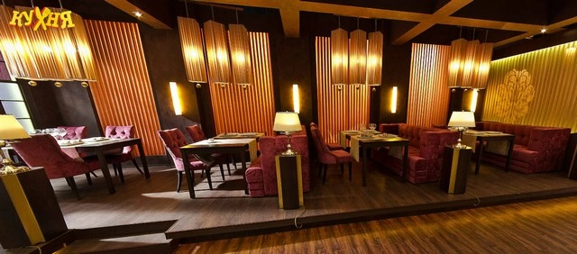
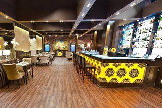
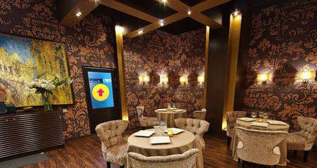
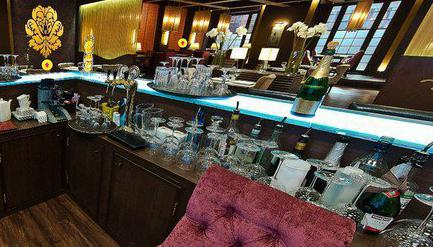
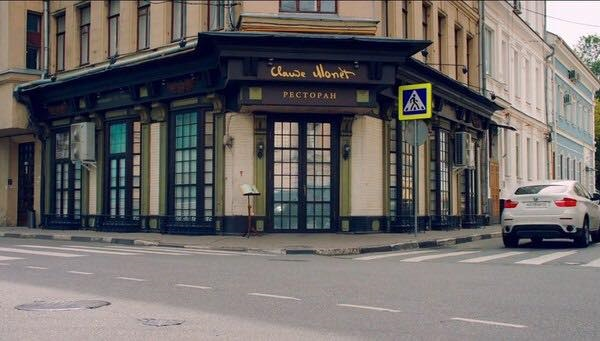
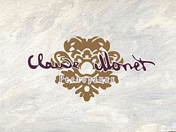

Назад
Особенности






Любой ресторан представляется местом изысканного питания и элитного отдыха, потому и отличительных особенностей у такого заведения гораздо больше, чем, например, у кафе или закусочной.
Первой характерной особенностью каждого ресторана, как правило, является его
обслуживание. Здесь посетителям предоставляют все: и прекрасную сервировку стола с красиво уложенными салфетками и цветами в вазах, и хорошо отделанный зал, и многие прочие удобства, например, кулерына входе и другое. Под хорошим обслуживанием, в первую очередь, понимается то, что посетителю, который уже определился с тем, что он будет заказывать из меню, не нужно будет ждать, потому что его обслужат сразу же и быстро. Это объясняется тем, что каждому столику предоставляется свой отдельный официант. Обязанности официанта включают: доставку блюд, смену пепельниц, уборку грязной посуды и замену ее на новую, а также множество других мелочей, которые посетители в заведениях более низкого уровня выполняли бы самостоятельно. Впрочем, плата за услуги официанта в ресторанах будет выше, чем в кафе или баре, так как она может составлять до 30% от всей суммы сделанного заказа.

Второй отличительной особенностью каждого ресторана является разнообразие его меню. Любой уважающий себя ресторан, как правило, обладает собственной кухней и собственными поварами, которых отбирают в соответствии с жестким конкурсом. Это свидетельствует о том, что каждый клиент застрахован от невкусной и некачественной еды. Кроме того, если посетитель остался недоволен качеством обслуживания или блюд, то он свое недовольство может высказать менеджеру, который и постарается все выяснить и уладить.